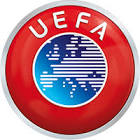

|  | UEFA |
| Ethnic | European |
| Job | Football Agency |
| Desc | xxxx |
Affiliation
| Location | Europea |
2005 04 00 Retrieve
[The 35-year-old Lehmann twice threw water over the referee and his assistant following the second leg of Arsenal’s Champions League encounter with Bayern Munich. The incident happened in the tunnel at Highbury after Arsenal won the match 1-0 but went out 3-2 on aggregate] Lehmann was found guilty of a ‘deliberate pestering act’ that displayed a ‘striking lack of respect towards the referee’
2012 06 18 Retrieve
[Nicklas Bendtner banned and fined £80,000 fines by UEFA after exposing sponsored underwear] This suspension applies to the next 2014 FIFA World Cup match, including the qualifying competition, for which Bendtner is eligible
[UEFA last week announced disciplinary proceedings against the player for] improper conduct (Law 4 of the Laws of the Game). Law 4, which covers ‘The players’ equipment’ states: Players must not reveal undershirts which contain slogans or advertising. A player removing his jersey to reveal slogans will be sanctioned by the competition organiser.
2015 09 18 Retrieve
[Uefa has upheld its decision to deduct one point from Croatia’s Group H Euro 2016 qualification tally for the display of a swastika during a game in June] Uefa’s appeals body has upheld the decision to dock Croatia one point for racist behaviour at their qualifying Group H game against Italy. The appeal by Croatia’s football federation [HNS] was rejected.
2015 10 14 Retrieve
[England, Portugal and Belgium among top seeds for Euro 2016 draw] The national team coefficients are calculated on a country’s recent results. In the current rankings, 20 per cent weighting is given to Uefa Euro 2012 results [qualifying/final tournament], and 40% each to the 2014 Fifa World Cup [qualifying/final tournament] and Uefa Euro 2016 [qualifying]
2015 10 14b Retrieve
[FA to assist UEFA in investigation into Lithuania-England crowd trouble] We were naturally concerned to witness scenes of disorder in Lithuania. However, we must be clear that these incidents did not happen within the official England Supporters Travel Club area, where supporters who had bought tickets from The FA were housed.
We would encourage the authorities to identify anybody involved in disorder and deal with them appropriately through the criminal system and with banning orders. We will, of course, fully cooperate with UEFA.
2015 11 14 Retrieve
[Uefa has expressed its ‘deep shock and sadness’ after the Paris attacks that have left more than 120 people dead] Uefa is deeply shocked and saddened by the tragic events which occurred in Paris last night and wishes to express its support and solidarity to France and to those affected by these horrible acts.
2015 11 16 Retrieve
[Uefa has confirmed that next year’s European Championship will be hosted by France as scheduled despite the atrocities that occurred in Paris] Following the dramatic events that occurred last Friday in Paris, Uefa and Euro 2016 SAS wish to reaffirm their commitment in placing safety and security at the centre of their organisational plans
While there is no reason to believe that the Euro might become the target of any attack, the potential terrorist threat has always been taken into account, since the beginning of the project. Euro 2016 SAS and all stakeholders involved in the organisation of the tournament will continue their joint work and will regularly monitor the level of risk for the tournament and their respective organisational plans.
For over three years now, Euro 2016 SAS has been working closely with the relevant authorities to develop the most appropriate mechanisms in order to guarantee there is a safe and secure tournament and we are confident that the necessary measures will be taken to ensure that is the case for all involved.
The Euro final draw will go ahead as scheduled on 12 December at the Palais des Congrès in Paris and the final tournament will be played in France from 10 June to 10 July 2016.
2016 03 22 Retrieve
[UEFA reaffirm commitment to safe Euro 2016] Following today’s events in Brussels, Uefa wishes to reaffirm its commitment in placing safety and security at the centre of its organisational plans for UEFA EURO 2016. EURO 2016 SAS and all stakeholders involved in the organisation of the tournament will continue their joint work and will regularly monitor the level of risk for the tournament and their respective organisational plans. For over three years now, EURO 2016 SAS has been working closely with the relevant authorities to develop the most appropriate mechanisms in order to guarantee a safe and secure tournament and all necessary measures are being taken to ensure that is the case for all involved.
2016 03 23 Retrieve
[Uefa says no plans to play Euro 2016 games behind closed doors] We are confident that all security measures will be in place for a safe and festive Euro and therefore there are no plans to play matches behind closed doors. However, we are nevertheless working on contingency plans and on multiple scenarios around crisis situations since we take the security of all participants [players, fans, etc] very seriously.
2017 01 11 Retrieve
[Premier League pays more than double the wages of next best-paying league] The aggregate wage bills of the 20 Italian, 20 Spanish and 18 German top-division clubs continue to converge and are within 5 per cent of each other, with Germany third on aggregate wages but now second on average club wages.
The average wage increase among the top 20 [teams] was 14%, with FC Barcelona, Roma and a number of English clubs increasing wages by more than 20% [due in part to success bonuses in the cases of FC Barcelona and AS Roma].
Of the 20 highest-paying clubs, 16 reported a comfortable wage to revenue ratio of less than 70%, and more than half of them a healthy ratio of less than 60%. The number of clubs with a wage bill in excess of €100m has increased each year from just 10 clubs in 2009 to 20 clubs in 2015.
Wages absorbed 63% of club revenue in 2015, up on last year but below the level recorded in all previous years. The wage to revenue ratio, widely recognised as one of the key financial indicators for football clubs, increased from 62.1% in 2014 to 63.0% in 2015. The ratio is still lower than before the introduction of financial fair play
2017 02 21 Retrieve
[UEFA will only allow one of Red Bull Salzburg and RB Leipzig to compete in either the Champions League or the Europa League next season] This will be verified by UEFA, once we have received the competition entry forms from the national football associations after the end of the season in the respective leagues.
2017 03 06 Retrieve
[BT Sport secures £1.18bn Champions League deal. John Petter, Consumer CEO at BT Sport] We are delighted to have renewed these rights. The UEFA Champions League and UEFA Europa League are two of the best competitions in the world and we would like to thank UEFA for choosing us as their exclusive broadcast partner in the UK. The UEFA Champions League is due to get even stronger and we are delighted that fans will be able to enjoy two live matches a night for the first time.
2017 10 20 Retrieve
[UEFA charge Everton after fans strike Lyon players] This case will be dealt with by the UEFA Control, Ethics and Disciplinary Body on 16 November
2018 01 24 Retrieve
[CEO Marco Fossone and Li’s right-hand man David Han Li met with UEFA officials and presented a 160-page document] There are still uncertainties in relation to the refinancing of the loans to be paid back in October 2018 and the financial guarantees provided by the main shareholder.
2018 03 08 Retrieve
[Kia Motors have agreed a deal to become an official partner of the UEFA Europa League] The UEFA Europa League presents us with the perfect platform from which to engage more closely with fans all over the globe, and enhancing Kia’s visibility as an exciting, dynamic brand for the young-at-heart. Together we will harness the power to surprise by creating the first global UEFA Europa League Trophy Tour presented by Kia, which will be a fantastic opportunity to promote the competition and Kia’s core brand values. Each season the competition reaches a television audience of one billion viewers, 45 per cent of which live outside of Europe, so we value partners such as Kia Motors that have such a great reach.
2018 06 27 Retrieve
[AC Milan have been banned from participating in European competition next season due to a contravention of Financial Fair Play] The Adjudicatory Chamber of the Club Financial Control Body [CFCB], chaired by Jose Narciso da Cunha Rodrigues, has taken a decision in the case of the club AC Milan that had been referred to it by the CFCB Chief Investigator for the breach of the UEFA Club Licensing and Financial Fair Play Regulations, in particular the break-even requirement. The club is excluded from participating in the next UEFA club competition for which it would otherwise qualify in the next two [2] seasons [i.e. one competition in 2018/19 or 2019/20, subject to qualification]. This decision may be appealed to the Court of Arbitration for Sport, in accordance with Article 34[2] of the Procedural rules governing the UEFA Club Financial Control Body, as well as Articles 62 and 63 of the UEFA Statutes. Atalanta will qualify straight to the group phase. Fiorentina will enter the preliminary round.
- 2018 08 28
- Cristiano Ronaldo’s stunning overhead kick for Real Madrid in their Champions League quarter-final clash with Juventus has been voted UEFA’s Goal of the Season for 2018
- 2018 08 30
- Luka Modric has been named the UEFA Men’s Player of the Year for 2017-18
2018 09 19 Retrieve
[Cristiano Ronaldo has been sent off in his first Champions League game for Juventus] As a rule, a player who is sent off the field of play is suspended for the next match in a UEFA club competition (i.e. UEFA Champions League, UEFA Europa League or UEFA Super Cup). In case of serious offences, the UEFA Control, Ethics and Disciplinary Body is entitled to augment this punishment, including by extending it to other competitions
2018 10 12 Retrieve
[Red Star Belgrade have responded with the highest anger and abomination to a report of match-fixing by the club] UEFA never comments on potential, or the existence of, investigations into alleged match-fixing as to not compromise the process of such investigations. UEFA only communicates on specific cases/matches once disciplinary proceedings have been opened and/or decisions have been taken
2018 10 30 Retrieve
[UEFA will inspect the Wembley pitch before allowing Tottenham’s Champions League clash against PSV Eindhoven to go ahead] UEFA is closely monitoring the situation at the Wembley Stadium and working together with the club, the Football Association and the management of the stadium, to guarantee safe playing conditions for the upcoming UEFA Champions League match.
2018 11 17 Retrieve
[Implementation of FFP] Under the updated regulations, any entity that, alone or in aggregate together with other entities which are linked to the same owner or government, represent more than 30% of the club’s total revenues is automatically considered a related party.
2018 11 19 Retrieve
[UEFA issued a statement making it clear it is ready to re-open investigations into past violations of Financial Fair Play if new information uncovers wrongdoing] If new information comes to light that may be material to this assessment, UEFA will use that to challenge the figures and will seek explanation, clarification or rebuttal from the club concerned. Should new information suggest that previously-concluded cases have been abused, those cases may be capable of being reopened as determined on a case-by-case basis.
2018 12 04 Retrieve
[UEFA’s FFP regulations state] The A list restriction is further supported by the restriction on the number of new registrations that clubs can add to the A list.
2018 12 28 Retrieve
[UEFA say Inter Milan failed to follow anti-racism protocol during Koulibaly incident] FIFPro and UEFA are very concerned by this unacceptable racist incident and by what appears on the surface to be a failure to respect the widely-recognised three-step anti-racism protocol. Koulibaly, a French-Senegalese defender, was subject to racist chanting and, despite announcements made by the stadium speaker, the chants did not stop. Moreover, it seems that Napoli’s coaching staff had already informed the referee several times of racist chants. Both organisations are of the opinion that the racist chants towards Koulibaly, who had to leave the pitch after receiving a second yellow card, are unacceptable and have no place in football.
Both organisations applaud the prompt actions taken by Italy’s football authorities, who sanctioned FC Internazionale with the next two matches to be played behind closed doors and, additionally, with a partial closure for FC Internazionale’s third home match
2018 12 31 Retrieve
[West Ham midfielder Samir Nasri is set to return to football after being handed a lengthy doping ban in 2017 following his use of prohibited substances] The player Samir Nasri has been found guilty for using a prohibited method in accordance with sub-section M2, par. 2 of the WADA [World Anti-Doping Agency] prohibited list. In this context, the CEDB [control, ethics and disciplinary body] has decided to suspend Samir Nasri for six months for violation of the World Anti-doping Code and the Uefa anti-doping regulations. This decision was taken on 22 February and is open to appeal.
2019 02 22 Retrieve
[UEFA have banned Valencia midfielder Geoffrey Kondogbia for two matches for receiving a yellow card on purpose] The UEFA Control, Ethics and Disciplinary Body has decided to suspend the Valencia CF player Geoffrey Kondogbia for two UEFA competition matches for which he would be otherwise eligible for clearly receiving a yellow card on purpose.
2019 02 28 Retrieve
[Real Madrid defender Sergio Ramos has been handed an extra one-match Champions League ban] The CEDB has decided to suspend the Real Madrid CF player Sergio Ramos for two UEFA competition matches for which he would be otherwise eligible for clearly receiving a yellow card on purpose. The two-match suspension includes the automatic one-match suspension for the repeated cautions.
2019 03 07 Retrieve
[Manchester City are under investigation for potential breaches of UEFA’s Financial Fair Play (FFP) regulations] The Investigatory Chamber of the independent UEFA Club Financial Control Body has today opened a formal investigation into Manchester City FC for potential breaches of Financial Fair Play (FFP) regulations. The investigation will focus on several alleged violations of FFP that were recently made public in various media outlets. UEFA will make no further comments on the matter while the investigation is ongoing
2019 03 12 Retrieve
[UEFA to take action following the behaviour of the CSKA fans] Following the match between CSKA Moscow and Manchester City, UEFA have reviewed the officials’ reports and found no breach of the conditions related to a match played behind closed doors that make part of the disciplinary decision. Only people who were allowed to enter the stadium (clubs delegations, media, security staff, UEFA and guests of sponsorship partners) attended the match with no record of inappropriate behaviour.
2019 03 13 Retrieve
[Neymar to be investigated for foul-mouthed Instagram post after Man Utd defeat] In accordance with the Article 31 (3) (a) of the UEFA Disciplinary Regulations, UEFA has today announced that it has appointed an Ethics and Disciplinary Inspector to conduct an investigation regarding the comments made on social media by the Paris Saint-Germain player Neymar Junior, following the 2018-19 UEFA Champions League match between Paris Saint-Germain and Manchester United FC, played on 6 March 2019 in France
2019 03 15 Retrieve
[Man Utd quarter-final tie with Barcelona reversed due to Man City] Following a decision made by the relevant local authorities, Manchester City FC and Manchester United FC cannot play at home on the same night, nor on consecutive nights. Should both clubs be drawn within the same sequence (home or away), the team having finished lower in the domestic league the previous season - in this case, Manchester United FC - will be reversed in accordance with the UEFA Club Competitions Committee principles. The match schedule for the quarter-finals (including a potential reversal involving Manchester United FC) will be communicated to all parties at approximately 12:45 CET on Friday 15 March. In accordance with paragraph 21.01(b) of the UEFA Champions League regulations, the UEFA administration will determine which matches will be played on Tuesday, which matches on Wednesday. The calendar for the semi-finals (including a potential reversal involving Manchester United FC, for the same reasons, if both clubs from Manchester are still remaining in the competition) will be communicated to all parties on 18 April 2019, following the return legs of the quarter-finals.
2019 03 18 Retrieve
[Ronaldo charged over ‘cojones’ celebration] Following a disciplinary investigation conducted by a UEFA Ethics and Disciplinary Inspector, in accordance with the Article 55 of the UEFA Disciplinary Regulations (DR), disciplinary proceedings have been opened following the UEFA Champions League round of 16 match between Juventus Football Club and Club Atlético de Madrid, played on 12 March in Italy. The UEFA Control, Ethics and Disciplinary Body will deal with this case at its next meeting on 21 March 2019
2019 03 22 Retrieve
[Neymar charged for ‘go fuck yourselves’ outburst] Disciplinary proceedings have been opened following the UEFA Champions League Round of 16 second leg match between Paris Saint-Germain and Manchester United FC (1-3), played on 6 March in France. Charges against Paris Saint-Germain: Player Neymar Junior - Insulting / molesting acts against match official (statements made by the player following the above-mentioned match) - Art. 15 (1) (d) of the UEFA Disciplinary Regulations. The case will be dealt with by the UEFA Control, Ethics and Disciplinary Body with the date of the hearing yet to be confirmed
2019 03 26 Retrieve
[UEFA has confirmed that disciplinary proceedings have been opened against Montenegro] Disciplinary proceedings have been opened following the European Qualifiers group A match between Montenegro and England (1-5), played on 25 March in Montenegro.
2019 05 16 Retrieve
[Man City fire back at UEFA over Financial Fair Play case] The Club Financial Control Body (CFCB) chief investigator, after having consulted with the other members of the independent investigatory chamber of the CFCB, has decided to refer Manchester City FC to the CFCB adjudicatory chamber following the conclusion of his investigation. The CFCB investigatory chamber had opened an investigation into Manchester City FC on 7 March 2019 for potential breaches of Financial Fair Play (FFP) regulations that were made public in various media outlets. UEFA will not be making any further comment on the matter until a decision is announced by the CFCB adjudicatory chamber.
2019 05 17 Retrieve
[Inter Milan released from FFP settlement agreement] The CFCB investigatory chamber confirmed that FC Astana, Beşiktaş JK and FC Internazionale Milano have been considered in compliance with the overall objective of their agreements, signed in May 2016 for Astana and in May 2015 respectively for the latter two. Consequently, they have now all exited the settlement regime.
2019 05 17b Retrieve
[UEFA responds to Arsenal’s criticism of ‘unacceptable’ Europa League final decisions] We acknowledge your letter of 15 May.
I would like to give you a bit of depth with this reply. Knowing your long experience in football and UEFA competitions, I am sure you can fully appreciate that the organisation of a final is a complex and lengthy operation. UEFA has committed to appoint hosts only via a fair and transparent bidding process, where the candidates have to provide evidence of their ability to stage the event on the basis of a number of criteria that are crucial to its successful delivery.
The bidding process for a club competition final is generally held a couple of years in advance, meaning that the exact circumstances in which the final will have to be organised cannot be known at the time of the appointment.
Mobility and accommodation are obviously key criteria falling under evaluation, with airport capacity being an important element. The specificity of the UEFA Europa League final, when compared to the UEFA Champions League final, is the high volatility in the number of fans following the two finalist teams. Experience from all previous finals tells us that the numbers may be very inconsistent from team to team and from final to final and that it is therefore not advisable to establish the tickets quota of the two finalist teams as a proportion of capacity rather than on statistically based realistic figures.
It would of course be ideal to postpone the entire ticketing process (including tickets for neutral public) until such moment when teams are known or closely predictable. Of course this is not possible due to the complexity of all ticketing operations and the need to draw up thorough and robust security plans.
It goes without saying that an all-English final played by two London teams was not a very predictable event at the time of the appointment. There is little doubt that this has added significant difficulties to the event logistics. We are really sorry for the problems that your (and Chelsea’s) fans are encountering trying to organise their journey to Baku. Our experts are keenly working on this matter with a view to help find cheaper solutions for travelling fans. We would welcome a joint effort with your club in this respect.
For UEFA fans are a priority. Football is for fans and all of them around Europe should have the chance to enjoy unique moments of top football such as only UEFA competitions can offer. Those matches are usually reserved to a limited number of countries whose clubs are particularly competitive but, when appropriate infrastructure exists and is built also in this perspective, it is fair and due not only to give also other fans the possibility of a unique live experience, but also to stage events which can greatly boost the promotion of football in an entire region. That’s why UEFA would consider utterly unfair to exclude certain venues just based on their decentralised geographical position.
I trust your understanding as men of sport and representatives of a club with a long and glorious tradition and solid sporting principles. I confirm our availability to work with you in order to find helpful solutions for your fans.
2019 05 21 Retrieve
[UEFA gave Arsenal star Mkhitaryan Europa League final safety assurances] Working alongside Arsenal FC, UEFA sought and received assurances regarding the player’s safety in Azerbaijan from the highest authorities in the country. As a result of these guarantees, a comprehensive security plan was developed and given to the club. While the club acknowledges the efforts that UEFA and the Azeri government have gone to in this matter, we respect the personal decision not to travel with the player.
2019 05 22 Retrieve
[UEFA, however, have defended their choice of Baku as the host city in a recent statement] It goes without saying that an all-English final played by two London teams was not a very predictable event at the time of the appointment. There is little doubt that this has added significant difficulties to the event logistics. We are really sorry for the problems that your fans are encountering trying to organise their journey to Baku. Our experts are keenly working on this matter with a view to help find cheaper solutions for travelling fans. We would welcome a joint effort with your club in this respect
- 2019 05 29
- UEFA has asked FIFA and the International Football Association Board (IFAB) to review regulations regarding concussion. Napoli goalkeeper David Ospina was also taken to hospital after a Serie A game against Udinese in March when he collapsed having attempted to play on after sustaining a head injury
- 2019 05 31
- Imagine Dragons has been confirmed by UEFA as the band that will play before the 2018-19 Champions League final between Liverpool and Tottenham at Madrid’s Wanda Metropolitano.
2019 06 01 Retrieve
[Clarifying how officials would judge a handball with the use of VAR, UEFA’s head of referees Roberto Rossetti said in January that a stance like Sissoko’s would be punished. Sadio Mane’s attempted cross was blocked when the ball struck Sissoko’s chest and then deflecting onto his arm, prompting referee Damir Skomina to immediately point to the spot] The big challenge is the position of the arm. When the arm is totally out of the body above the shoulder it should be penalised. If the defender is making the body bigger in order to block the ball it is not fair. It is different if the defender is challenging or playing the ball and it rebounds. But if he is looking to block a cross or a shot on goal and the player is trying to spread his body then it is a handball.
- 2019 06 09
- Portugal and Netherlands face off in Porto on Sunday for the right to get their hands on the inaugural UEFA Nations League trophy
- 2019 06 09b
- Cristiano Ronaldo has vowed to lead Portugal in a drive for more silverware after their Nations League triumph
2019 06 19 Retrieve
[Neymar’s appeal against his three-match European ban has been rejected by UEFA. The Brazil forward was sanctioned for insulting match officials following Paris Saint-Germain’s dramatic Champions League exit at the hands of Manchester United in March] The appeal lodged by Paris Saint-Germain is rejected. Consequently, the UEFA Control, Ethics and Disciplinary Body’s decision of 25 April is confirmed. The CEDB had decided to suspend the Paris Saint-Germain player Neymar Junior for three (3) UEFA competition matches for which he would be otherwise eligible, for insulting match officials
- 2019 06 21
- Skillzy is designed by UEFA to be a new interactive mascot, who is expected to engage fans from all walks of life Skillzy was revealed as the UEFA Euro 2020 mascot on March 25, 2019 as part of the organisation’s ‘Your Move’ campaign. UEFA believes it has broken new ground with regards to mascots with Skillzy, marrying the traditional life-sized mascot with a more interactive figure for the modern day
2019 07 01 Retrieve
[Despite finishing fifth in Serie A in 2018-19, AC Milan have been excluded from next season’s Europa League for breaking UEFA’s Financial Fair Play rules. The Italian club have accepted the punishment for the violations which happened under the previous owners] Whilst saddened by the fact that our fans will not be able to see their team compete in European competition next season, the club recognises and respects FFP. The club acknowledges it has no other choice but to accept the sanctions, as it seeks to forge a pathway back to full compliance
2019 07 08 Retrieve
[Argentina’s fury at their Copa 2019 exit prompted reports they could play in UEFA, a suggestion which has been swiftly denied by the governing body] There is no truth whatsoever in the suggestion that Argentina has been asked to participate in UEFA competitions, nor to become a member of UEFA. UEFA has never entered into any discussions on this matter and would never do so. However, in the spirit of friendship and camaraderie and as an inclusive organisation, UEFA will, of course, invite Argentina as special guests to watch any UEFA competition at any time
2019 08 29 Retrieve
[Glasglow Rangers will reject any away ticket allocation for their next European fixture following a partial stadium closure from UEFA over sectarian singing] Those fans responsible for this partial closure of Ibrox Stadium need to understand that they are damaging our club. If there is a further incidence at tomorrow night’s match this could lead to a ground closure. The same applies to those who indulged in sectarian singing in Warsaw last week and that is why we have taken the decision to make UEFA aware that we will decline tickets for our next away match even though this means that, once again, the many must suffer because of the few.
This kind of behaviour has no place at Ibrox, or anywhere else where our many teams appear. Offenders must please stop. You are endangering your club which has recently launched its Everyone Anyone project aimed at welcoming all to Ibrox. Those who wish to sing offensive songs must realise by now that they are insulting Rangers players, staff, and fellow fans. There is nothing clever, bold or even defiant in what this small number of supporters are doing. By supporting Rangers in the correct way the rest of us must strive to protect our great club. One way or another this offensive behaviour must end and it would be much more preferable if we stopped it ourselves, simply by behaving like true Rangers fans
2019 09 24 Retrieve
[Explained: What is the Europa Conference League] The new competition will start in 2021 and is aimed at giving more clubs in more countries a chance to participate in European football
2019 09 25 Retrieve
[UEFA Nations League format changes: What’s different for 2020-21 European tournament?] This change to the format follows a consultation process which involved all of UEFA’s 55 national associations and reflects upon their desire to further minimise the number of friendly matches
2019 10 07 Retrieve
[How to apply for Euro 2020 tickets] Tickets to see specific teams will only be allocated to supporters who meet the criteria set out by their national football associations
2019 10 13 Retrieve
[Images of Daniel James lying motionless on the pitch quickly circulating on social media. UEFA’s most recent guidelines state that the match referee should stop the game for up to three minutes if concussion is a concern] A player suffering a head injury that requires assessment for potential concussion will only be allowed to continue playing after the assessment, on specific confirmation by the team doctor to the referee of the player’s fitness to do so
2019 10 29 Retrieve
[Bulgaria handed two-match supporter ban after England racism storm] The Bulgarian Football Union [is] to play behind closed doors the next two matches that will be played by its A representative team as host association in a UEFA competition, the second of which being suspended during a probationary period of two years as from the date of the present decision, for the racist behaviour of its supporters
UEFA orders the Bulgarian Football Union to implement the following directive in the next two UEFA competition matches which the association will play as the host association: to display a banner with the wording ‘NO TO RACISM’, with the UEFA logo on it
UEFA fines the Bulgarian Football Union €75,000 for the racist behaviour of its supporters and the throwing of objects
2019 11 07 Retrieve
[The cup-tied rule drew criticism from figures in the football industry, their argument mainly focusing on high-profile players - iterating that clubs may buy players not to succeed in cup tournaments but to strengthen their side in league competitions] This is in line with the existing regulatory situation in the different domestic leagues, which does not impose restrictions on the eligibility for competitions of players registered for a new club during the winter transfer window
2020 02 14 Retrieve
[Man City banned from Champions League for two years and fined €30m] The Adjudicatory Chamber, having considered all the evidence, has found that Manchester City Football Club committed serious breaches of the UEFA Club Licensing and Financial Fair Play Regulations by overstating its sponsorship revenue in its accounts and in the break-even information submitted to UEFA between 2012 and 2016.
The Adjudicatory Chamber has also found that in breach of the regulations the Club failed to cooperate in the investigation of this case by the CFCB.
The Adjudicatory Chamber has imposed disciplinary measures on Manchester City Football Club directing that it shall be excluded from participation in UEFA club competitions in the next two seasons (ie. the 2020/21 and 2021/22 seasons) and pay a fine of €30 million
2020 02 15 Retrieve
[How will Man City’s ban affect Champions League qualification in the Premier League?] A club which is not admitted to the competition is replaced by the next best-placed club in the top domestic championship of the same association, provided the new club fulfils the admission criteria
2020 03 10 Retrieve
[No requests to delay Euro 2020 despite coronavirus concerns] We did not receive a single request from national associations to postpone the tournament
2020 03 11 Retrieve
[Sevilla-Roma, Inter-Getafe the latest matches to be postponed due to coronavirus] As a result of the travelling restrictions between Spain and Italy imposed yesterday by the Spanish authorities, the following UEFA Europa League Round of 16 matches will not take place as scheduled tomorrow, 12 March 2020. Further decisions on the two matches will be communicated in due course
2020 03 12 Retrieve
[UEFA plans coronavirus pandemic talks after stating ‘no reason’ to postpone Euro 2020] There is no reason to change anything in the time schedule. UEFA is in contact with the relevant international and local authorities regarding the coronavirus and its development
In the light of the ongoing developments in the spread of Covid-19 across Europe and the changing analysis of the World Health Organisation, UEFA has today invited representatives of its 55 member associations, together with the boards of the European Club Association and the European Leagues and a representative of FIFPro, to attend meetings by video conference on Tuesday 17 March to discuss European football’s response to the outbreak
Discussions will include all domestic and European competitions, including UEFA Euro 2020. Further communication will be made following those meetings
2020 03 13 Retrieve
[All Champions League & Europa League matches postponed to combat coronavirus spread] In the light of developments due to the spread of Covid-19 in Europe and related decisions made by different governments, all UEFA club competitions matches scheduled next week are postponed. This includes the remaining UEFA Champions League, Round of 16 second-leg matches scheduled on 17 and 18 March 2020; all UEFA Europa League, Round of 16 second-leg matches scheduled on 19 March 2020; all UEFA Youth League, quarter-final matches scheduled on 17 and 18 March 2020. Further decisions on when these matches take place will be communicated in due course. As a consequence of the postponements, the UEFA Champions League and UEFA Europa League quarter-final draws scheduled for 20 March have also been postponed. UEFA yesterday invited representatives of its 55 member associations, together with the boards of the European Club Association and the European Leagues and a representative of FIFPro, to a videoconference meeting on Tuesday 17 March to discuss European football’s response to the outbreak
2020 03 13b Retrieve
[Will Champions League and Europa League be cancelled by coronavirus outbreak?] In the light of developments due to the spread of Covid-19 in Europe and related decisions made by different governments, all UEFA club competitions matches scheduled next week are postponed. This includes the remaining UEFA Champions League, round of 16 second-leg matches scheduled on 17 and 18 March 2020; all UEFA Europa League, round of 16 second-leg matches scheduled on 19 March 2020; all UEFA Youth League, quarter-final matches scheduled on 17 and 18 March 2020
2020 03 17 Retrieve
[Euro 2020 becomes Euro 2021 as UEFA confirms sweeping Champions League & league changes] The health of all those involved in the game is the priority, as well as to avoid placing any unnecessary pressure on national public services involved in staging matches. The move will help all domestic competitions, currently on hold due to the Covid-19 emergency, to be completed. All UEFA competitions and matches (including friendlies) for clubs and national teams for both men and women have been put on hold until further notice. A working group has been set up with the participation of leagues and club representatives to examine calendar solutions that would allow for the completion of the current season and any other consequence of the decisions made today
2020 03 20 Retrieve
[UEFA reverses Euro 2020 name decision after tweet ‘error’] With apologies for the earlier error, to be clear no decision has yet been made on the name of the rearranged EURO to be held in 2021. The earlier tweet was sent by mistake
The working group will comprise representatives of the UEFA administration, the European Club Association and the European Leagues. It will explore different ways of enabling the completion of the current club season, both at domestic and European level. Final decisions can only be taken when we have greater clarity on when football will be able to restart. Our aim is to complete all European and domestic club competitions by the end of the current sporting season - 30 June 2020 - if the situation improves. However, the health of all people involved in the game must first be guaranteed. The working group will assess different scenarios. We must wait for the outcome of its discussions as well as the evolution of the situation before reaching any conclusions
2020 03 23 Retrieve
[Champions League and Europa League finals postponed due to coronavirus pandemic] The working group will analyse the options available. The group has already begun its examination of the calendar. Announcements will be made in due course
2020 03 24 Retrieve
[Coronavirus outbreak: Would Liverpool be denied the Premier League if title race is cancelled?] The health of all those involved in the game is the priority, as well as to avoid placing any unnecessary pressure on national public services involved in staging matches. The move will help all domestic competitions, currently on hold due to the Covid-19 emergency, to be completed
A commitment [to be made] to complete all domestic and European club competitions by the end of the current sporting season, i.e. June 30, 2020 at the latest, should the situation improve and resuming playing be appropriate and prudent enough
2020 03 30 Retrieve
[UEFA defends decision to stage Atalanta v Valencia amid coronavirus threat] On February 19, no one knew that Lombardy would be the centre of the epidemic. Who were we to say it shouldn’t go ahead? We followed the advice of the authorities at all times and we couldn’t do anything
Decisions can’t be taken in a day. There are contracts and agreements. Football was still being played across Europe then. The borders were still open when Valencia and Atalanta played. Gatherings of fans outside the stadium was the responsibility of the Spanish authorities
2020 04 02 Retrieve
[UEFA claims Abandoning domestic competitions is premature and unjustified] We are confident that football can restart in the months to come - with conditions that will be dictated by public authorities - and believe that any decision of abandoning domestic competitions is, at this stage, premature and not justified.
A joint management of calendars is strictly required as the conclusion of the current season must be coordinated with the start of the new one, which may be partly impacted because of the overstretch. Closely following the development of the current situation, the calendar working group will indicate as soon as possible, and ideally by mid-May, which of the plans can be enacted for the completion of the season without leaving anyone behind. It is of paramount importance that even a disruptive event like this epidemic does not prevent our competitions from being decided on the field, in accordance with their rules and that all sporting titles are awarded on the basis of results. As responsible leaders in our sport, this is what we must ensure, until the last possibility exists and whilst planning, operational and regulatory solutions are available
2020 04 04 Retrieve
[UEFA stressed that domestic competitions shouldn’t be abandoned just yet] We are confident that football can restart in the months to come - with conditions that will be dictated by public authorities - and believe that any decision of abandoning domestic competitions is, at this stage, premature and not justified.
A joint management of calendars is strictly required as the conclusion of the current season must be coordinated with the start of the new one, which may be partly impacted because of the overstretch.
Closely following the development of the current situation, the calendar working group will indicate as soon as possible, and ideally by mid-May, which of the plans can be enacted for the completion of the season without leaving anyone behind.
It is of paramount importance that even a disruptive event like this epidemic does not prevent our competitions from being decided on the field, in accordance with their rules and that all sporting titles are awarded on the basis of results
2020 04 05 Retrieve
[UEFA deny August deadline for Champions League conclusion] It has been reported that UEFA president Aleksander Ceferin told ZDF in Germany that the Champions League must finish by August 3. This is not true. The President was very clear not to set exact dates for the end of the season. UEFA is currently analysing all options to complete domestic and European seasons with the European Club Association and the European Leagues in the working group set up on March 17. The primary priority of all the members of the working group is to preserve public health. Following on from that, it is to find calendar solutions to complete all competitions. Options are currently being studied to play matches in July and in August if needed, depending on restart dates and the permission of national authorities
We are confident that football can restart in the months to come - with conditions that will be dictated by public authorities - and believe that any decision of abandoning domestic competitions is, at this stage, premature and not justified.
A joint management of calendars is strictly required as the conclusion of the current season must be coordinated with the start of the new one, which may be partly impacted because of the overstretch. Closely following the development of the current situation, the calendar working group will indicate as soon as possible, and ideally by mid-May, which of the plans can be enacted for the completion of the season without leaving anyone behind. It is of paramount importance that even a disruptive event like this epidemic does not prevent our competitions from being decided on the field, in accordance with their rules and that all sporting titles are awarded on the basis of results
2020 04 08 Retrieve
[UEFA president Aleksander Ceferin offered some good news for Reds fans on Tuesday] I see no way for Liverpool to stay untitled. If the championship resumes, they will almost certainly win it - theoretically, it has not yet reached the guaranteed level, but it is practically close. However, if it could not be played, it would also be necessary to announce the results in some way and find some key on how the champions should be determined. And, of course, again I do not see a scenario in which that would not be Liverpool
2020 04 16 Retrieve
[UEFA announce another coronavirus meeting to discuss season resolutions] It has been reported that UEFA president Aleksander Ceferin told ZDF in Germany that the Champions League must finish by August 3. This is not true. The President was very clear not to set exact dates for the end of the season. UEFA is currently analysing all options to complete domestic and European seasons with the European Club Association and the European Leagues in the working group set up on March 17. The primary priority of all the members of the working group is to preserve public health. Following on from that, it is to find calendar solutions to complete all competitions. Options are currently being studied to play matches in July and in August if needed, depending on restart dates and the permission of national authorities
2020 04 21 Retrieve
[UEFA announced it is to produce new guidelines outlining qualification criteria for its competitions from domestic leagues that cannot be completed. However, the governing body once again recommended competitions should be finished if possible] UEFA met its 55 member associations via video conference and presented an update of the options being looked into by the two working groups that were created mid-March. A variety of calendar options were presented covering both national team and club competition matches.
The funding of national associations through UEFA’s HatTrick programme was also discussed with UEFA reiterating its commitment to meeting the payments to member associations as planned.
There was a strong recommendation given to finish domestic top divisions and cup competitions, but some special cases will be heard once guidelines concerning participation to European competitions - in case of a cancelled league - have been developed
2020 04 23 Retrieve
[Coronavirus: No name change for Euro 2020 despite postponement to 2021] Following the postponement of UEFA Euro 2020 to the summer of 2021 and after a thorough internal review as well as several discussions with partners, the Executive Committee has decided that the tournament will still be known as UEFA Euro 2020. This decision allows UEFA to keep the original vision of the tournament to celebrate the 60th anniversary of the European Football Championships (1960 - 2020). It will furthermore serve to remember how the whole football family came together to respond to the extraordinary circumstances of the COVID-19 pandemic and the difficult times Europe, and the world, had to go through in 2020. This choice is in line with UEFA’s commitment to make UEFA Euro 2020 sustainable and not to generate additional amounts of waste. A lot of branded material had already been produced by the time of the tournament’s postponement. A change to the name of the event would have meant the destruction and reproduction of such items
2020 04 23b Retrieve
[Italian FA extends Serie A season until August 2 amid coronavirus disruption] UEFA urges national associations and leagues to explore all possible options to play all top domestic competitions giving access to UEFA club competitions to their natural conclusion. However, UEFA stresses that the health of players, spectators and all those involved in football as well as the public at large must remain the primary concern at this time
2020 04 23c Retrieve
[‘Sporting merit’ will decide qualifiers for next season’s Champions League] As a result of representations made by the football authorities in Belgium and Scotland, the committee recognises the issues raised and approved the guidelines on eligibility principles for 2020-21 UEFA club competitions. The guidelines reflect the principle that admission to UEFA club competitions is always based on sporting merit. Therefore, UEFA urges national associations and leagues to explore all possible options to play all top domestic competitions giving access to UEFA club competitions to their natural conclusion. However, UEFA stresses that the health of players, spectators and all those involved in football as well as the public at large must remain the primary concern at this time. The ideal scenario, should the pandemic situation permit it, is to have the currently suspended domestic competitions completed enabling football clubs to qualify for UEFA club competitions on sporting merit in their original format. Should this outcome not be possible, in particular due to calendar issues, it would be preferable that suspended domestic competitions would restart with a different format in a manner which would still facilitate clubs to qualify on sporting merit
If a domestic competition is prematurely terminated, UEFA would require the national association concerned to select clubs for the UEFA club competitions 2020-21 based on sporting merit in the 2019-20 domestic competitions. The procedure for selecting clubs should be based on objective, transparent and non-discriminatory principles. National associations and leagues should otherwise have the ability to decide the final positions in their domestic competitions, having regard to the specific circumstances of each competition
2020 04 28 Retrieve
[UEFA sets May 25 deadline for leagues to decide plans to finish season due to coronavirus pandemic] National associations and/or leagues should be in a position to communicate to UEFA by May 25, 2020 the planned restart of their domestic competitions including the date of restart and the relevant competition format. In the event that a domestic competition is to be prematurely terminated for legitimate reasons in accordance with [conditions set out by the executive committee], UEFA would require the national association to explain by May 25, 2020 … the special circumstances justifying such premature termination and to select clubs for UEFA club competitions 2020-21 on the basis of sporting merit in the 2019-20 domestic competitions
2020 04 30 Retrieve
[PSG crowned Ligue 1 champions and Lyon miss out on Champions League after coronavirus cancellation] National Associations and/or Leagues should be in a position to communicate to UEFA by May 25, 2020, the planned restart of their domestic competitions - including the date of restart and the competition format
2020 06 03 Retrieve
[Trabzonspor handed one-year European ban] On 5 July 2019, the UEFA Club Financial Control Body (CFCB) Adjudicatory Chamber determined that Trabzonspor AŞ (TUR) failed to be break-even compliant as required by a settlement agreement, which it entered into on 20 May 2016 and sanctioned the club with a conditional exclusion from participating in one (1) UEFA club competition for which it would otherwise qualify in the 2020/21 and 2021/22 seasons. The sanction would not take effect if the club fulfilled certain conditions, including meeting a target with respect to its financial results for the 2019 financial year. The CFCB Adjudicatory Chamber has now determined that Trabzonspor AŞ failed to meet the target fixed for the 2019 financial year. As a result, the CFCB Adjudicatory Chamber has ordered that the club be excluded from participating in one (1) UEFA club competition for which it would otherwise qualify in the 2020/21 and 2021/22 seasons.
UEFA concluded with the decision today that our club did not comply with the reconciliation agreement we have signed with them. Although we respect the decision, we would like to emphasize that we disagree with this decision in our evaluation with club lawyers. We would like to announce that we will object against this decision within 10 days
2020 06 27 Retrieve
[England to start 2020 Nations League away to Iceland as UEFA confirms new schedule] The 2020/21 UEFA Nations League group stage will be played on revised dates in September, October and November 2020. The new schedule was announced following a meeting of the UEFA Executive Committee on Wednesday 17 June to discuss the new European football calendar in light of the COVID-19 outbreak. The national team football windows of October and November 2020 will now feature triple-headers instead of double-headers, thus allowing the postponed UEFA EURO 2020 play-offs to be rescheduled for 8 October and 12 November. The group stage matches of the 2020/21 UEFA Nations League will be played on the following dates: 3/4/5 and 6/7/8 September; 10/11 and 13/14 October; 14/15 and 17/18 November 2020. Friendly matches will be played on 7/8 October and 11/12 November
2020 07 13 Retrieve
[Manchester City to play in Champions League next season after European ban overturned] UEFA takes note of the decision taken by the Court of Arbitration for Sport to reduce the sanction imposed on Manchester City by UEFA’s independent club financial control body for alleged breaches of the UEFA club licensing and Financial Fair Play regulations
UEFA notes that the CAS panel found that there was insufficient conclusive evidence to uphold all of the CFCB’s conclusions in this specific case and that many of the alleged breaches were time-barred due to the five-year time period foreseen in the UEFA regulations
Over the last few years, Financial Fair Play has played a significant role in protecting clubs and helping them become financially sustainable and UEFA and ECA remain committed to its principles